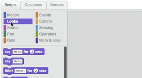
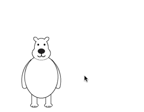

Diga o que você gosta sobre ela
What do you like about this favorite thing?
Clique na guia Scripts.
Clique na categoria Aparências, então arraste um bloco diga Olá! por 2 segundos para a área de scripts:

Digite o que você quer que ele diga:
Você pode clicar nesse bloco para testá-lo.
Agora, torne-o interativo!
Clique na categoria Eventos.
Arraste um bloco quando esse ator for clicado e coloque-o no topo:
Agora, você pode clicar em seu ator para vê-lo falar.

Em seguida, grave sua voz